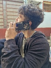

Tendedero automático retráctil
Proyecto en grupo
Buscábamos resolver un problema cotidiano muy molesto: tender y recoger la ropa. Lo automatizamos y lo presentamos en una mini maqueta.
Trabajo con mi familia en el rubro de muebles y me gusta aprender armando eventos, cumpleaños y decoraciones.

Me llamo Mauricio, tengo 16 años y trabajo con mi familia en el rubro de muebles. Me considero un buen alumno y tengo buen estado físico para trabajos pesados.
Lo que sé hacer:
Proyecto en grupo
Buscábamos resolver un problema cotidiano muy molesto: tender y recoger la ropa. Lo automatizamos y lo presentamos en una mini maqueta.